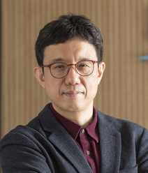

Prof. Jong Chul Ye
KAIST Endowed Chair Professor · IEEE Fellow

Education
- Postdoctoral Researcher, Coordinated Science Lab., Univ. of Illinois at Urbana-Champaign, 1999–2001 (Advisors: Yoram Bresler, Pierre Moulin)
- Ph.D., Electrical & Computer Engineering, Purdue University, 1999 (Advisors: Kevin Webb, Charles Bouman)
- M.S., Control & Instrumentation Engineering (now ECE), Seoul National University, 1995
- B.S., Control & Instrumentation Engineering (now ECE), Seoul National University, 1993
Work Experience
- Jan. 2022 – current: Full Professor (tenured), Kim Jaechul Graduate School of AI, KAIST
- Mar. 2016: KAIST Endowed Chair Professor
- Aug. 2004 – Dec. 2021: Assistant → Associate → Full Professor, Dept. of Bio & Brain Engineering, KAIST
- Mar. 2017 – current: Adjunct Professor, Dept. of Mathematical Sciences, KAIST
- Jul. 2014 – Aug. 2015: Interim Department Head, Dept. of Bio & Brain Engineering, KAIST
- 2003 – 2004: Senior Researcher, X-ray CT Technology Group, GE Global Research Center, New York
- 2001 – 2003: Senior Member Research Staff, Philips Research Center, Briarcliff Manor, New York
Leadership & Editorial Positions
- IEEE Fellow (2020) — “for contributions to signal processing and machine learning for bio-medical imaging”
- Distinguished Lecturer, IEEE EMBS, 2020–2021
- General Chair, IEEE Int. Symp. on Biomedical Imaging (ISBI), 2020
- Program Chair, IEEE ICASSP, Seoul, 2024
- Chair, IEEE Technical Committee on Computational Imaging (TC-CI), 2020–2021
- Senior Editor, IEEE Signal Processing Magazine, 2018 – current
- Associate Editor, IEEE Trans. Medical Imaging, 2018 – current
Honors & Awards
- Fellow of IEEE (2020)
- IEEE EMBS Distinguished Lecturer (2020–2021)
- KumGok Technical Achievement Award, KSIAM (2022)
- Gold Medal for Technical Achievement, KSMRM (2021)
- 1st place, Reconstruction Challenge, ISMRM Workshop (2009)
- KAIST Research Excellence Award (2012)
- Beckman Senior Fellowship, UIUC (2012–2013)
- 2nd Place, AAPM Low-Dose CT Grand Challenge (2016)
- 3rd Place, CVPR NTIRE Super-Resolution Challenge (2017)